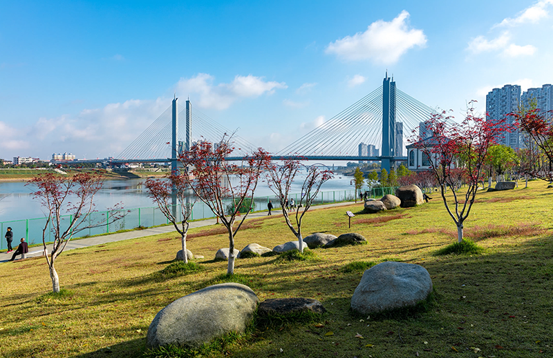
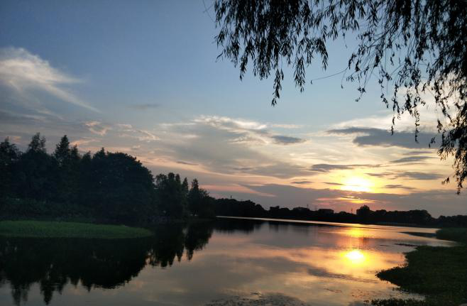

益山益水，益美益阳
羞女峰：位于桃江县资水之滨，主峰海拔375米，滨资江北岸，它是一座峻峰如削，而又状如裸女的峰峦。她头枕青山，长发飘垂，仰面青天，下颚高翘，细腰小腹，乳修山镇峰隆起，伸臂张腿，那白练般的一线山泉从两腿的山坳里飞流而下，悄然注入江中。 这巨幅大自然的杰作，仿佛要勾勒出中华民族最古老祖先女娲氏的豪放而坦荡的轮廓、为母系氏族时代永刻一道痕迹于人间似的。
沿江风光带：资江作为一条纽带，串起了沿江的古城、古塔、古亭，形成了有山有水的美丽风景。资阳为古益阳的所在，是益阳之根。其大码头明清街区、三国文化遗迹等，有着浓浓的地方文化、历史文化气息。与古城隔江相对的江南会龙山-鳊鱼山地区，面积达十多平方公里，江天空阔，山峦浅竽，林风苍翠，秀润雅洁，是宝贵的城市山林，有裴公亭，白鹿寺、广法寺、栖霞寺、福源寺等四大寺院诸名胜。以上成线成片，形成“一江两岸半城山”的旅游空间。


湖南琼湖国家湿地公园：位于南洞庭湖与西洞庭湖国际重要湿地交汇处，由互为连通的浩江湖、蓼叶湖、上琼湖、下琼湖、石矶湖及胭脂湖等湖泊群构成。涉及湖泊湿地、沼泽湿地、和人工湿地3大湿地地类，湿地公园内水域广阔，港汊密布、岸线曲折，堤岸自然、林草丰茂、景色秀美、观赏性强，湿地生态特征明显，是洞庭湖周边湖泊湿地的典型代表，是集湿地保护保育、湿地功能和湿地文化展示、湿地休闲、湿地科研、监测和宣传教育于一体的国家湿地公园。